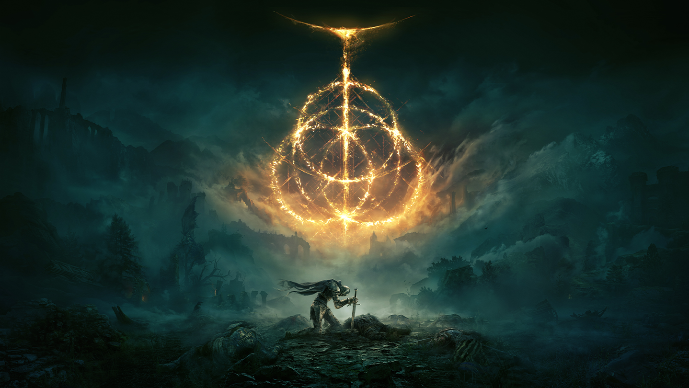
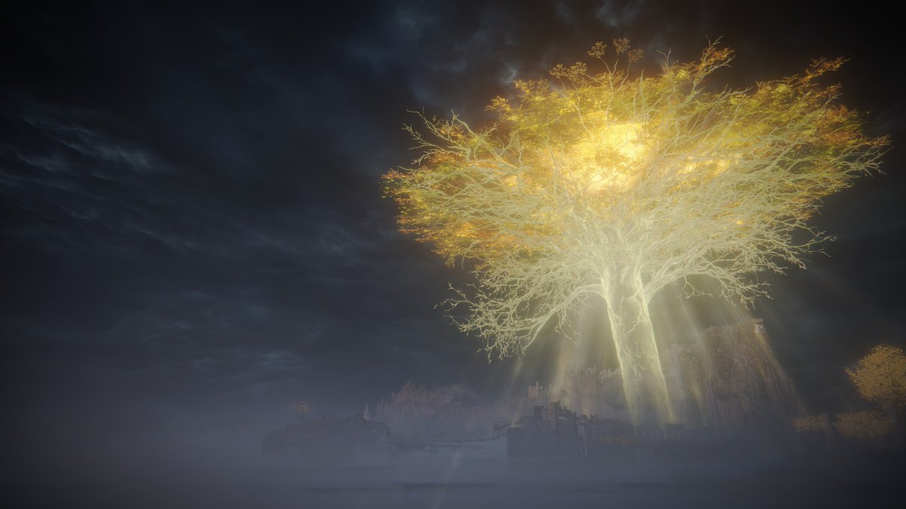
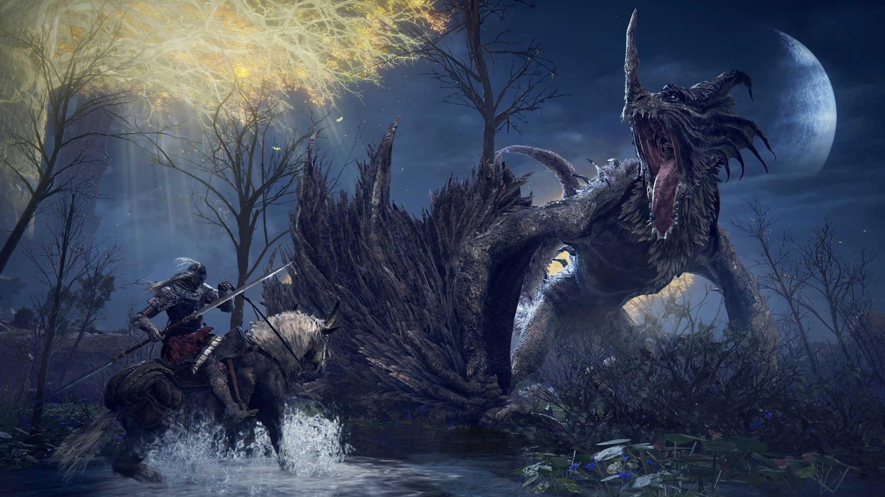
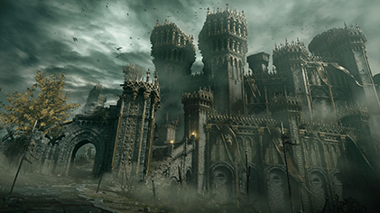
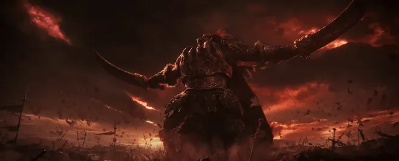
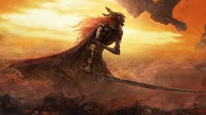

The Erdtree
The golden Erdtree dominates the skyline of the Lands Between and symbolizes the power of the Greater Will.

After the Elden Ring was shattered, the demigods of the Lands Between fought for control of the Great Runes. The world fell into chaos during an event known as the Shattering.
You play as one of the Tarnished — warriors who return to the Lands Between guided by grace to restore the Elden Ring and become Elden Lord.

The golden Erdtree dominates the skyline of the Lands Between and symbolizes the power of the Greater Will.
When Queen Marika shattered the Elden Ring, the demigods began a devastating war for control of its fragments.
Tarnished warriors return to the Lands Between in search of the Elden Ring fragments to claim the title of Elden Lord.




This video explains the deeper lore of the Lands Between, including the demigods and the Shattering.
A gathering place for Tarnished champions.
Leave messages for fellow Tarnished.
Seek the Elden Ring and become Elden Lord.